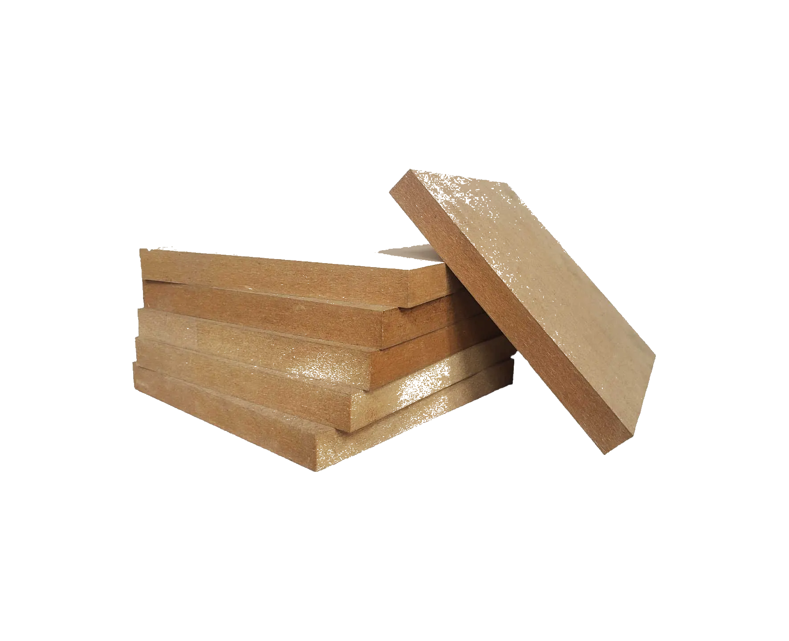
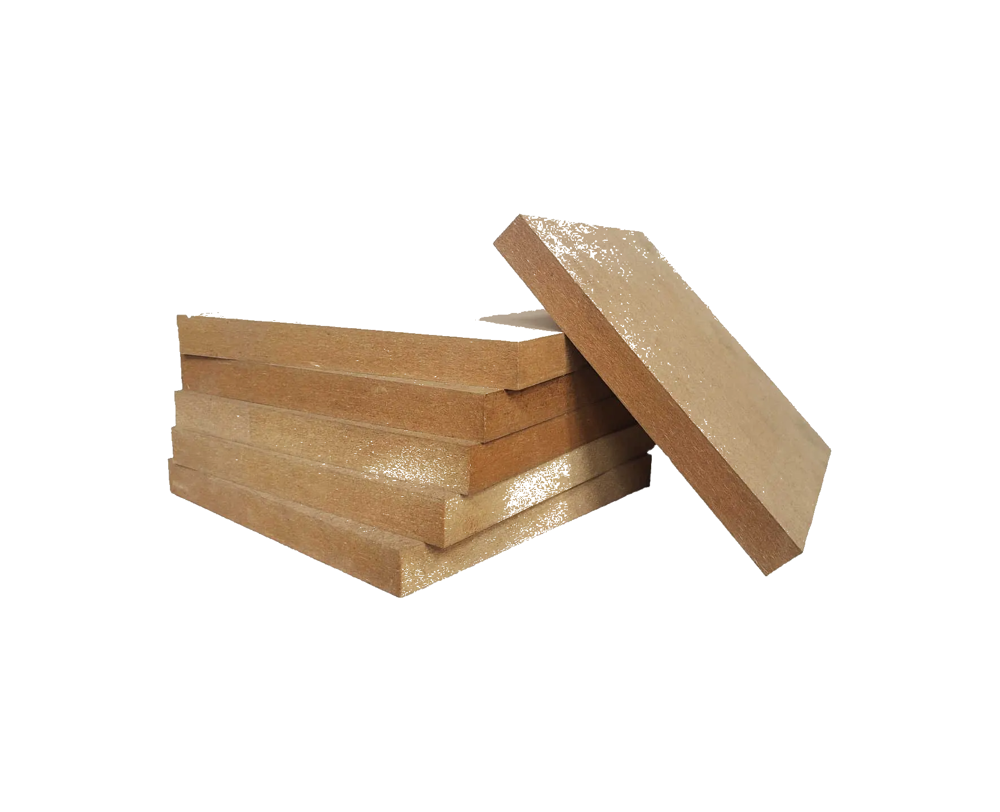

Visão traseira

Visão da lateral esquerda
Visão da lateral direita
Visão frontal

Um dos top de linha da Machine Monsters, agora disponível para o consumidor!
"Um brinquedo genial e um robô companheiro. 10/10" IGN
"Realmente um dos melhores da marca! Se superaram e muito! 9/10" Mãe do criador
Imagem real mostrando como é o acionamento das armas, tendo em vista a rotação dos motores e a tragetória feita pelos palitos.
O Atrom B200 C3-PO possui duas armas retráteis , as quais são híper precisas e atendem seu propósito: estourar balões. Seus movimentos, extremamente rápidos, não dão chance alguma aos inimigos.
O piloto possui acesso a um controle o qual o permite locomover o robô por meio de um aplicativo de celular com conexão bluetooth. Adiante, é necessário fazer com que o sensor de toque seja ativado ao encostar em alguma superfície para que as armas sejam, por sua vez, ativadas.
O robô conta com um total de quatro motores. Dois desses são acionados após um toque com os sensores presentes em sua frente. Já os restantes, são os das rodas - controlados por um aplicativo, possuindo as direções de frente / trás / esquerda / direita.
Os drivers (dois) controlam, cada um, dois motores. Ou seja, um está destinado para os motores das armas e o outro está para os das rodas.
Para a confecção do Atrom, nossos designers passaram anos tentando achar um balanceamento perfeito entre precisão, agilidade, mobilidade e eficiência. Para tal, os principais recursos utilizados na fabricação foram:
 



Nossa equipe é composta pelos mais bem capacitados profissionais no tocante à robótica.

O evendo do da RoboCup 2022 será sediado no festival NEXT da FIAP. Nesse, diversos grupos apresentarão os trabalhos que, durante o ano inteiro, tanto batalharam para finalizar.
À esquerda, você poderá ver um vídeo da edição de 2019 do evento e, até mesmo, observar como serão as competições dos robôs.
Sendo um evento de tecnologia e inovação promovido por jovens, o NEXT é um dos festivais mais interessantes para quem se interessa nos assuntos de tech e empreendedorismo.
Após uma parada na anualidade do evento por conta da pandemia, esse volta no ano de 2022 para os alunos da faculdade e convidados.